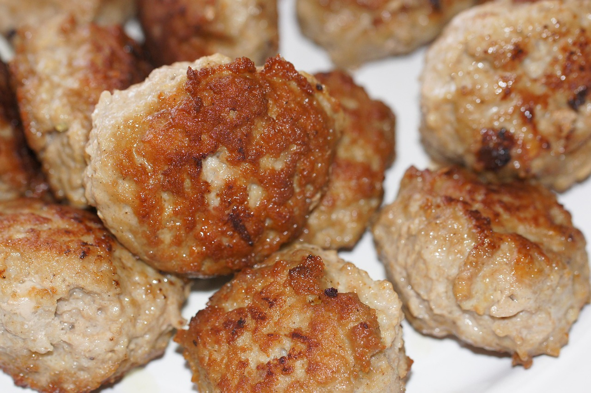

Frikadeller recipe

Ingredients
Original recipe (1X) yields 4 servings
- ½ pound ground veal
- ½ pound ground pork
- ¼ cup milk, or as needed
- ¼ cup finely grated onion
- 1 large egg
- ¼ cup bread crumbs, or as needed
- ¼ cup all-purpose flour
- ¼ cup seltzer water
- salt and pepper to taste
- ¼ cup margarine
Directions
- Mix veal and pork together in a bowl until well combined. Stir in milk, onion, and egg. Mix in bread crumbs, then flour; knead well to mix. Mix in seltzer water, salt, and pepper until well combined. The mixture should be very moist, but not dripping. Cover and refrigerate for 15 to 30 minutes.
- Form about 2 1/2 tablespoons meat mixture into a slightly flattened, oval meatball about the size of a small egg. Repeat to make remaining meatballs.
- Melt margarine in a large skillet over medium heat. Fry meatballs in the hot skillet until no longer pink in the center and well browned on the outside, about 15 minutes per side. An instant-read thermometer inserted into the center should read at least 160 degrees F (70 degrees C).